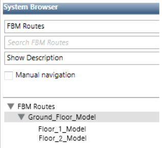
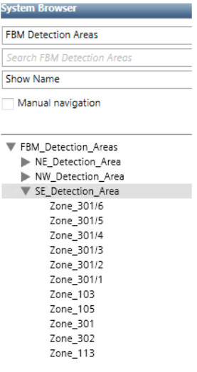
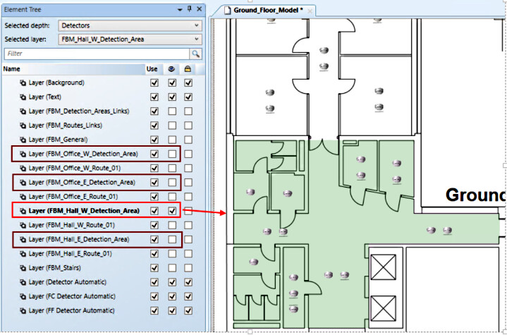
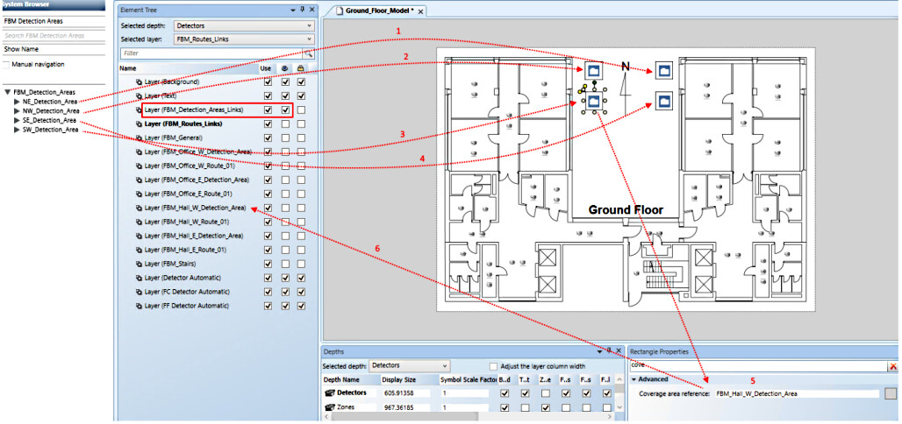
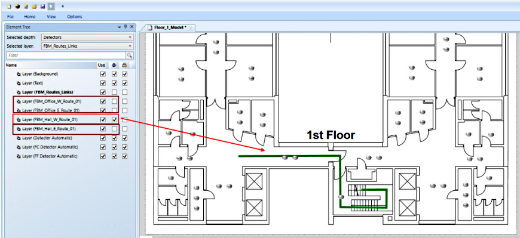
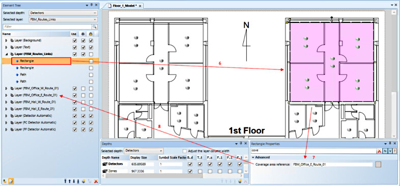
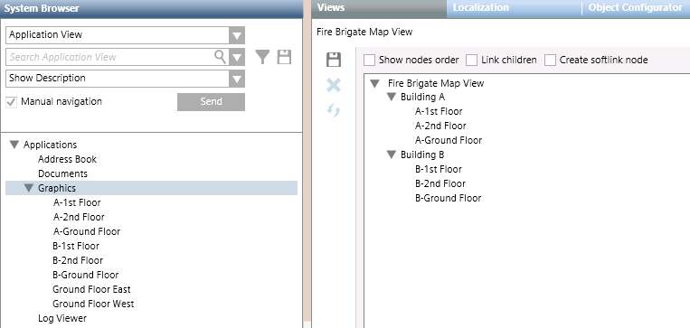

Multi-Map Access / Evacuation Routes
It is possible to generate multi-page fire brigade showing access or evacuation routes across multiple graphics. For example, an access route from the ground floor to the first floor, with the detection area marked on ground floor map. To achieve this, you need to create the following user-defined views:
- View that describes the maps sequence: This view is made only of Desigo CC graphics, and specifies the routes among floors to go from the entrance to a specified point in the building or vice-versa, through a hierarchical structure of parent/child graphics.
- View that specifies the detection areas: This view is made of folders (aggregators) and objects of interest (most likely zones and detectors), whose goal is to allow the display of detection areas
These views must then be set when you run the Fire Brigade Maps generation tool, in the parameters of the Access/evacuation routes sequence page. See 3 – Access / Evacuation Routes Sequence. In the graphics you must also appropriately configure layers to show the detection areas and access or evacuation routes (see below).
View Describing the Maps Sequence
This is a user-defined view consisting only of graphics in a hierarchical structure. For each "leaf" graphic present here, a maps sequence is defined:
- Going from root graphic > [intermediate graphics] > leaf graphic, in the case of an Access Route.
- Going from leaf graphic > [intermediate graphics] > root graphic, in the case of an Evacuation Route
For example the below view contains a ground floor graphic that is the parent of two additional graphics, for first and second floor. It will result in the following map sequences, each comprising two graphics. As before, the direction (root to leaf or vice versa) is determined by whether you select an access route or evacuation route during map generation:
- Ground Floor <--> Floor 1
- Ground Floor <--> Floor 2

View Specifying Detection Areas
This is a user-defined view in which you create a folder corresponding to each detection area that you want to show, and under each of these folders add the corresponding fire objects. For example, the below view contains folders for three detection areas, NE, NW, and SE. Under each folder are drag-and-dropped the corresponding fire zones.

Layers for Detection Area
Typically, in a multi-map sequence we want to always display the relevant detection area on the ground floor map. To do this, on the ground floor graphic:
- Create a layer for each detection area that you have previously defined. These layers only contain polygons with a textured background to visually display each detection area.
The image below shows an example. 
- Now, still in the ground floor graphic, create a layer to link the folders of the previously created user-defined view with the corresponding detection areas:
- Into this layer, insert all the folders from the user-defined view for detection areas. (In this example, NE_Detection_Area, NW_Detection_Area, SE_Detection_Area and SW_Detection_Area).
- Around each folder, create a polygon whose Coverage Area Reference property has the value of the layer with the polygon for visual display of that detection area

Layers for Access or Evacuation Routes
For access routes we typically want to show how to go from the ground floor entrance to the stairs, and then on the relevant floor how to go from the stairs to the detection area. In the case of an evacuation route we show the reverse path.
- On the graphic of each floor, create a layer to show the access/evacuation route of each detection area.:
- These layers only contains polylines to visually display the path from the stairs to a specific detection area or vice versa.
- On the ground floor graphic, also create a layer to show the route from the building entrance to the stairs or vice versa.

- Now on the graphic of each floor, also create a layer to link the above access/evacuation routes with the corresponding detectors:
This layer contains polygons surrounding the detectors whose Coverage area reference property has the value of the layer with the corresponding access/evacuation route polyline. 
- On the link layer for the ground floor graphic, you must also link the graphic object(s) of other floors.
Notes on Route Layers
As with the single-map output, the set of maps defined by the view hierarchy can include object-specific access routes. To do this:
- Configure the access route layers in the graphics.
- Then associate the layers to fire objects in one of the following ways:
- In the hierarchy of the view, use graphics with fire objects that are part of the fire system hierarchy in System Browser. For instance, for a fire zone, you can use graphics with area and section objects on top of the last graphic with the fire zone and its detector objects.
- In graphics that do not have suitable fire objects, add the graphic objects that are child nodes in the hierarchy of the view (grandchildren are not allowed). In practice, in a parent graphic, drag the child graphics.
- In both cases, to create the association with the access route layer, enclose the symbols –representing a parent/grandparent fire object or a child graphic– inside a rectangle with coverage area reference to the access route layer. For more information, see Access Route and Detection Area Layers via Coverage Areas.
